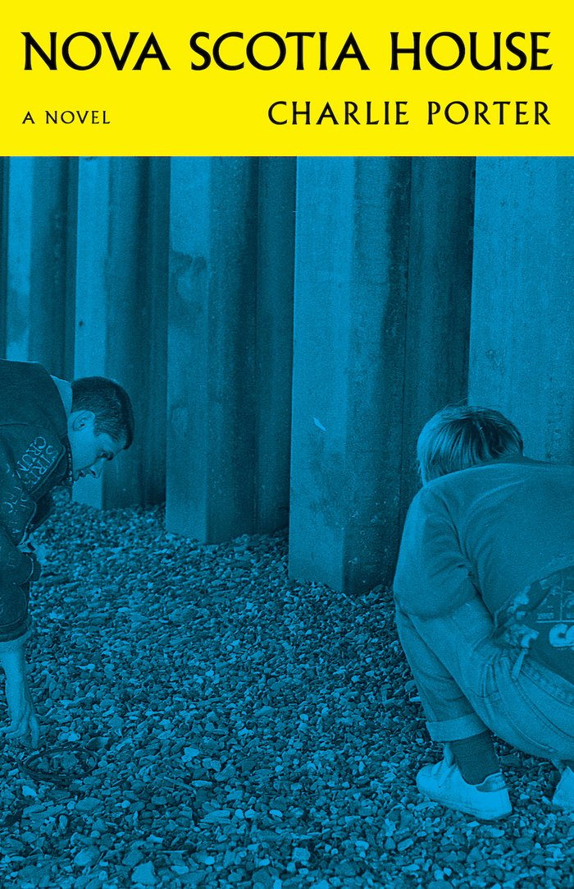

Nova Scotia House
Nova Scotia House is Charlie Porter's first novel, after two books on fashion. In it, Johnny looks back on his life with Jerry, his partner, after Jerry's AIDS-related death. They met when Johnny was 19 and Jerry was 45, and made a life together in Jerry's flat, 1, Nova Scotia House, where Johnny still lives. Nightboat's US paperback, published October 21, 2025, runs 240 pages. The novel won the 2026 Lambda Literary Award in Gay Fiction, was shortlisted for the 2025 Goldsmiths Prize, and was named a Best Novel of 2025 by The Washington Post and The Guardian.
“It is profoundly, bracingly human.”
— Nick Duerden, The Observer
“It invites the reader to join him in an exhilarating, risk-taking, life-affirming experiment.”
— Neil Bartlett, The Guardian
“Nova Scotia House is an urgent work of remembrance.”
— Joel Danilewitz, The Brooklyn Rail
Sources: Nick Duerden, The Observer; Neil Bartlett, The Guardian; Joel Danilewitz, The Brooklyn Rail. Publisher details and awards from the Nightboat Books page.
A first novel that already comes with a Lambda Award, a Goldsmiths shortlisting, and year-end notices from The Washington Post and The Guardian. It has a pin on the Atlas in East London.
Buy NowTip the Booktender